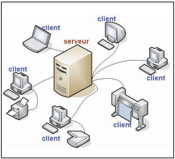
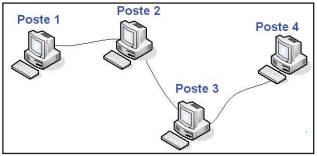
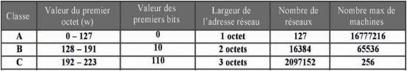
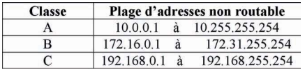

Un réseau informatique correspond à un ensemble de moyens matériels et logiciels reliés entre eux leur permettant d’échanger des informations et de partager des ressources.
Organisation physique et logique d’un réseau.
L’organisation physique concerne la façon dont les machines sont connectés
(Bus, Anneau, Étoile ….).
La topologie logique montre comment les informations circulent sur les réseaux
(diffusion ou point à point).
Suivant la distances qui sépare les ordinateurs, on distingue plusieurs catégorie de réseaux :
Ordinateur ou programme qui met à disposition des services informatiques. Exemple : un serveur Web fournit le service d'hébergement de pages HTML
Le clientL'ordinateur client est généralement un ordinateur personnel ordinaire, équipés de logiciels relatifs aux différents types de demandes qui vont être envoyées, comme un navigateur web.

les réseaux d'égal à égal ne sont valables que pour un petit nombre d'ordinateurs (généralement une dizaine), et pour des applications ne nécessitant pas une grande sécurité
Les réseaux permettent :
Pour établir une communication dans un réseau, l’émetteur doit disposer des informations nécessaires pour identifier le récepteur.
Sur un réseau utilisant le protocol TCP/IP chaque machine est identifiée par une adresse IP. Chaque identifiant IP, appelé numéro ou adresse IP, doit être unique sur l'ensemble du réseau.
Une adresse IP est un nombre codé sur 4 octets (32 bits).
Exemple : en mode binaire une adresse IP prend la forme suivante :
10011011 01101001 00110010 01000101
Traduite en mode décimal, on obtient 4 nombres compris entre 0 et 255. Dans notre
exemple : 155.105.50.69
Le plus courant, cette adresse est représentée sous la forme décimale pointée w.x.y.z
où w,x,y,z sont quatre chiffres décimaux allant de 0 à 255.
Cette adresse peut être vue de 4 façons différentes:
La décomposition d'une adresse IP en adresse de réseau plus une adresse de
machine sur un réseau ne se fait pas au hasard.
Pour voir si l'adresse du réseau d'une machine est codée sur 1,2 ou 3 octets, il suffit
de regarder la valeur du premier octet (ou seulement les premiers bits du premier
octet).

Remarques
1 - Pour chaque classe d’adresses, on trouve des plages d'adresses réservées
pour les réseaux locaux. Ces adresses ne sont pas routables ( Elles ne peuvent
pas être
utilisées en dehors des réseaux locaux) :

2- Adresse réservée pour les tests 127.0.0.1 adresse locale de la machine (loopback).
Afin de clairement identifier la partie de l'adresse représentant le réseau et
celle
appartenant à la machine, on utilise un masque (mask) composé de 32 bits.
Les bits représentant le réseau sont positionnés à 1 et les bits répresentant la
machine dans le réseau sont positionnés à 0.
En conséquence, le masque pour un réseau de classe B se compose comme suit:
Masque : 11111111 11111111 -- 00000000 00000000
Adresse IP : 10011011 01101001 -- 00110010 01000101
Réseau machine
La valeur du masque en mode décimal est 255.255.0.0.
Dans un réseau local, chaque machine dispose d'une adresse physique unique(adresse MAC).
Cette adresse dépend du matériel utilisé pour mettre la machine en réseau.
Dans un réseau TCP/IP, chaque machine est identifiée par une adresse IP.
Cette adresse est logique, elle ne dépend pas du matériel.
Cette adresse IP peut être modifiée par les administrateurs pour diverses raisons.
La sécurité définit la protection des ressources de réseau contre le dévoilement, la modification, le piratage, la restriction ou la destruction non autorisée
Un pare-feu (appelé aussi coupe-feu, garde-barrière ou firewall en anglais), est un système permettant de protéger un ordinateur ou un réseau d'ordinateurs des intrusions provenant d'un réseau tiers (notamment Internet). il s'agit d'une passerelle filtrante comportant au minimum les interfaces réseau suivantes :
Le Proxy est une machine qui joue le rôle d’intermédiaire entre les ordinateurs d’un réseau local et internet.